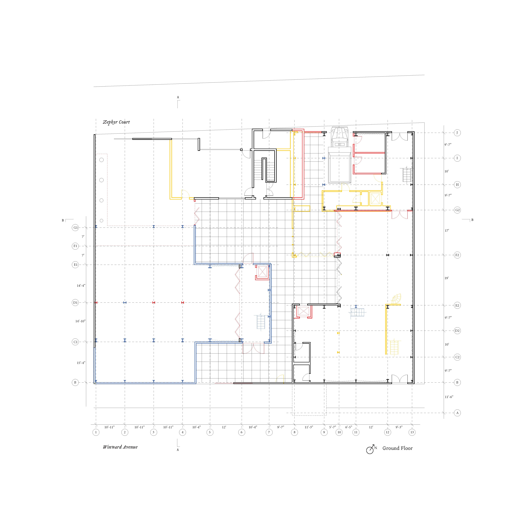
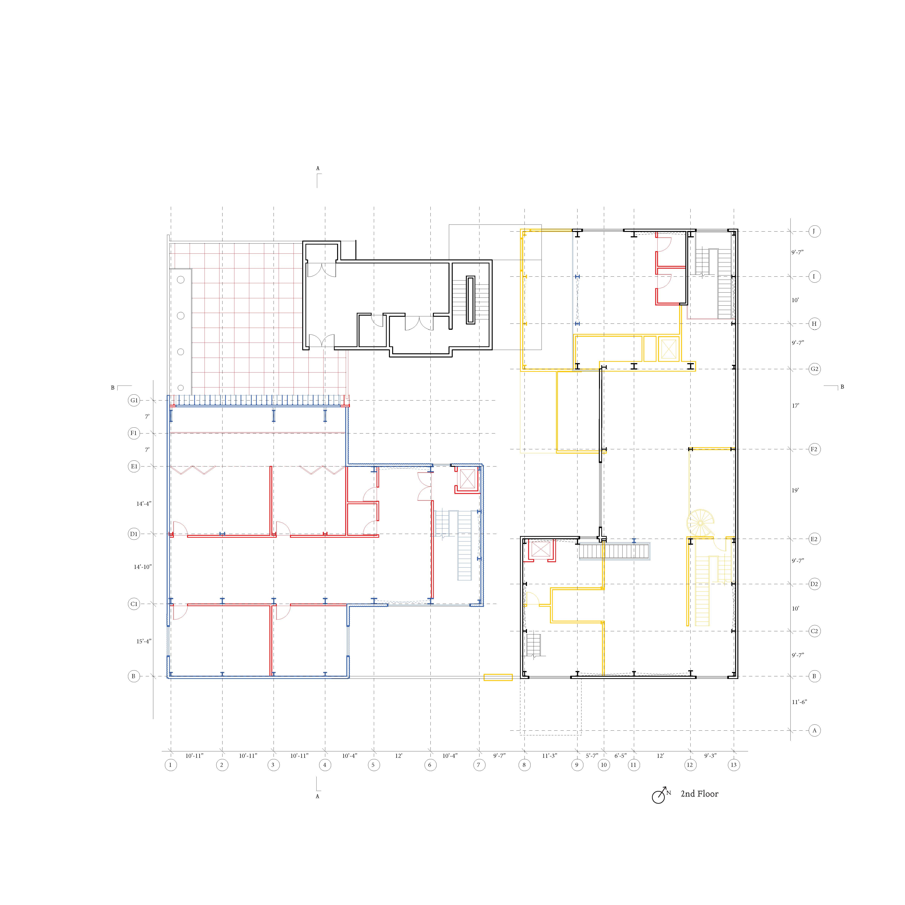
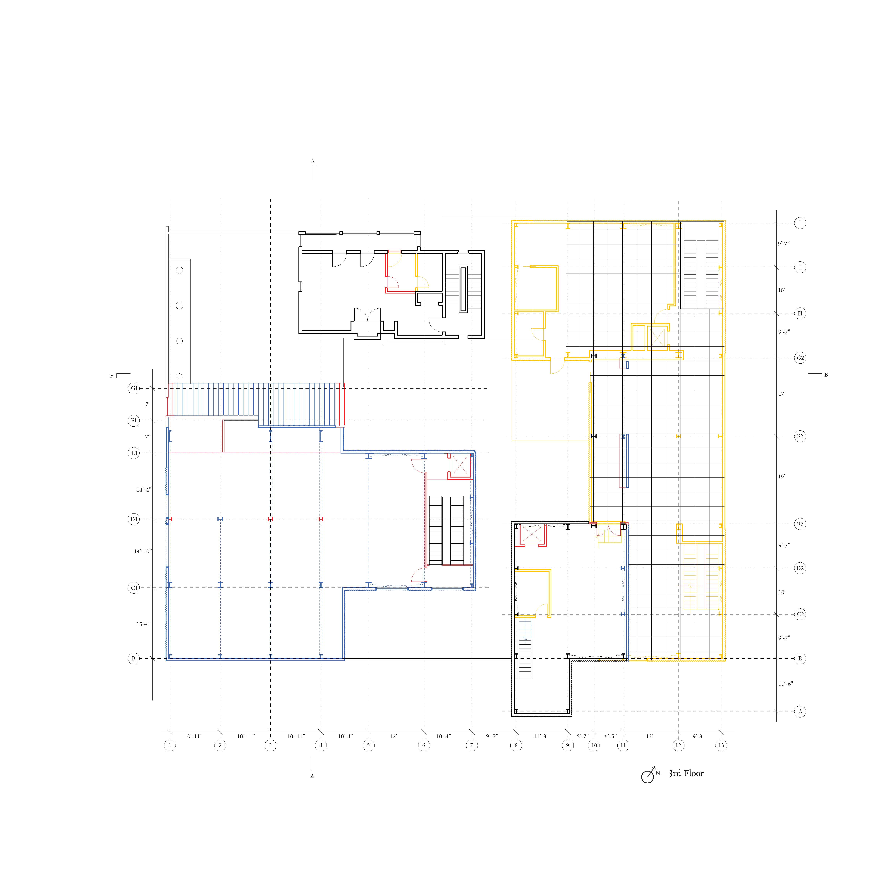
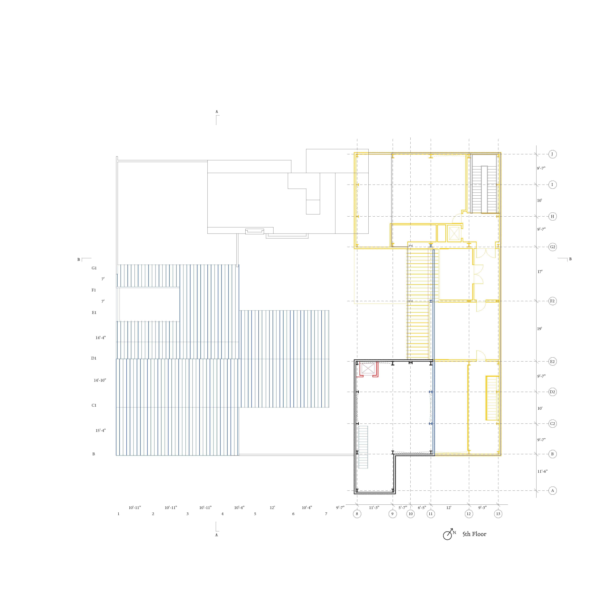
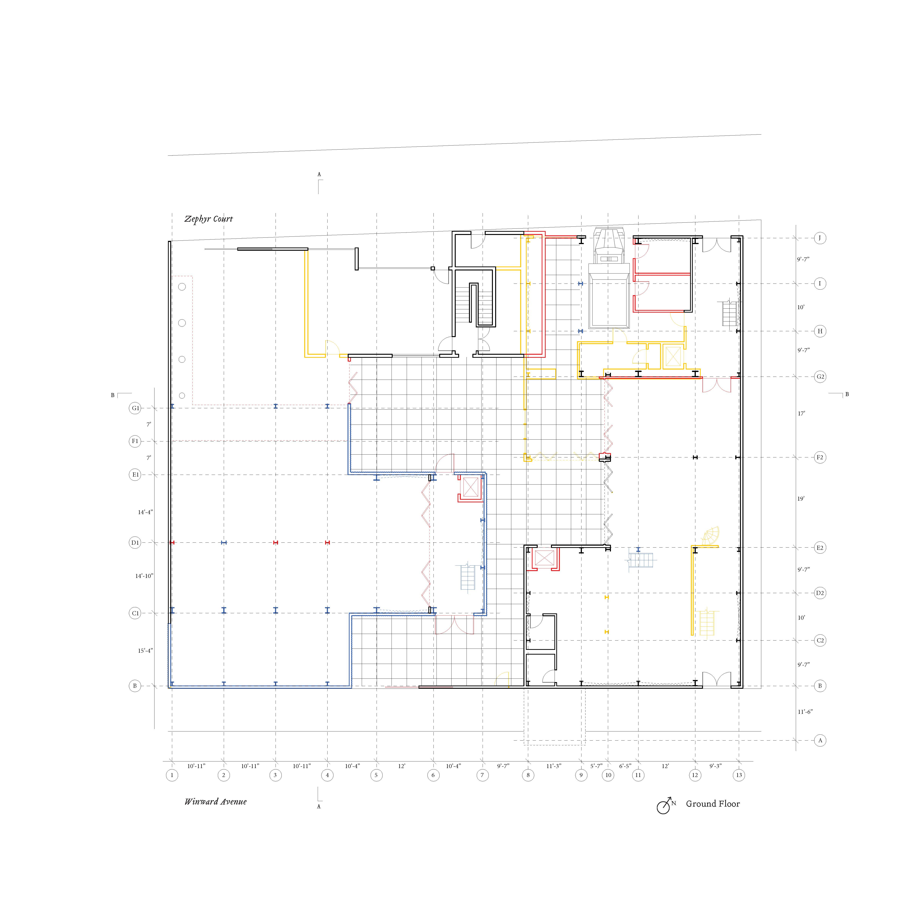
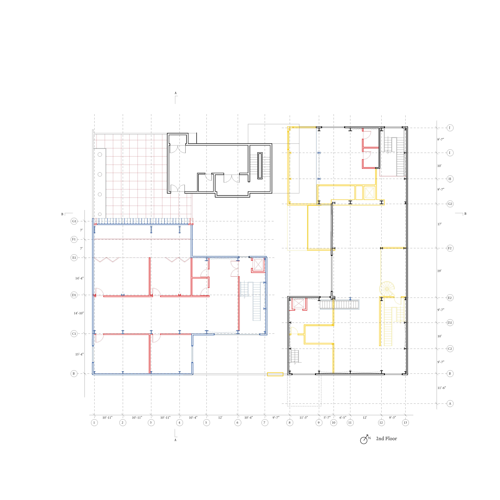
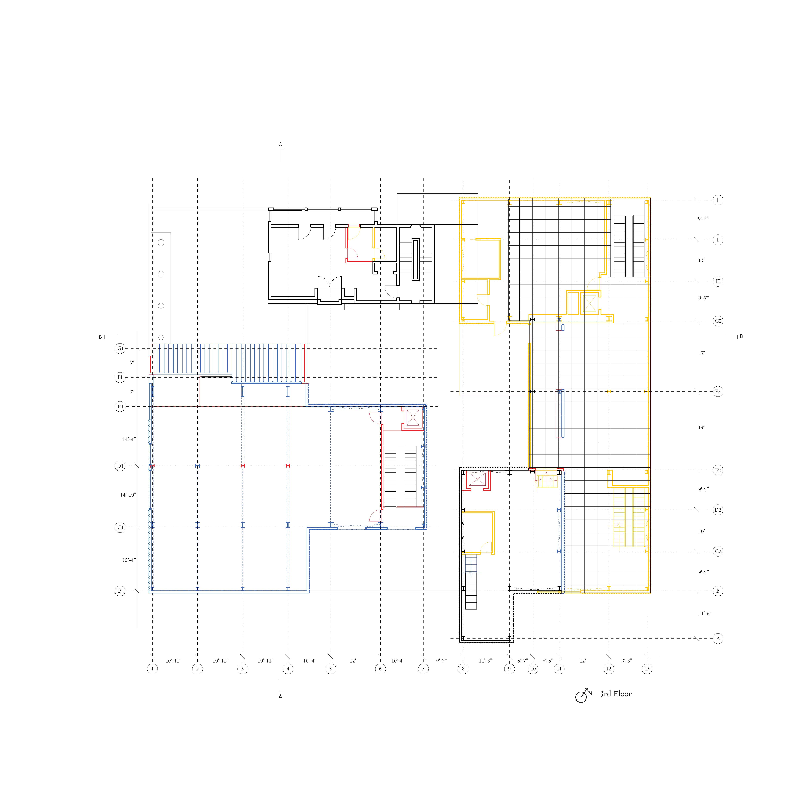
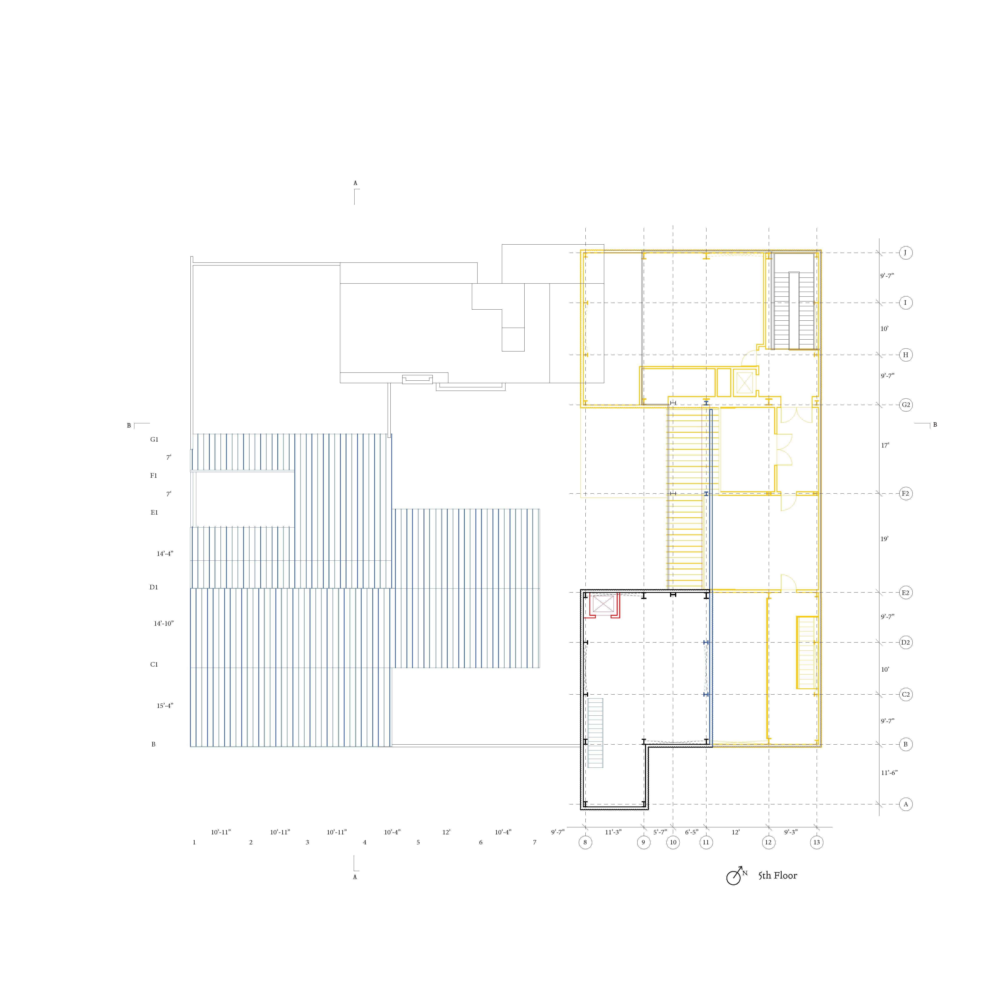

a_2412_ced
A Rudimentary Study of Parts to a Building, and a Proposed Re-Organization
University of California, Berkeley, College of Environmental Design
Special Thanks to: Raha Talebi (instructor)
2024 CED Design Process Award
Following images are larger than screen size.
In every drawing,
Blue represents reusable/upcycled parts.
Yellow represents demolished parts.
Red represents new additions.
Black represents untouched parts.


A building is an organization of material in an instance of time. The scheme of this organization is dependent on the building occupant’s desired uses and programs.
57-69 Windward Avenue used to be the residence of artist Robert Graham and actress Anjelica Huston. The buildings’ initial programs, as desired by the two, were a full residence and a full artist studio, and thus it was originally organized as two equal masses, with mirroring silhouettes (residence on west and studio on east).
As the buildings changed hands, the residence was no longer needed. The buildings were re-organized into its current state, with the residence demolished into a flat ground for parking and for hosting events. Demolition is a form of reorganization, because the material technically still exists—it just got reorganized into a landfill.

unfolded elevation of previous west bungalow
.JPG)
The current left-over west bungalow, after its partial demolition.
The east artist studio, mostly unchanged.
Now, the programs ask for a more comprehensive art manufacturing area. I was interested in if it is possible to create a new building, not by demolishing the materials into a landfill, but rather reorganizing these materials into a new form according to new programs. As the existing studio building is made of steel structure and prefab composite panels, I see this potential for reorganization.
The artist residence is housed in the existing west building. The manufacturing space prefers flat ground, so I pushed most of the material on the second floor and above in the studio building into the open ground area, reorganized into a new building. The new building also houses meeting rooms, classrooms, and exhibition space. What is left untouched in the studio building is also intentional, it creates a nice new silhouette for the elevation, overlooking the rest of the buildings as well as Venice Beach. It now acts as the material archive.
The material, when treated as individual parts available to be reorganized, also has agency in themselves, giving me inspiration and guidance. For example, the undulation of the new roof form is derived from existing roof connections. The pre-fab panels already have apertures cut into them, which are preserved and create interesting points of friction.
This is only a rudimentary study of parts to a building, because architecture is the summation of many different and complex systems, structural material being only one of them. For example, I did not have available time to consider the infrastructural electricity and water systems, the circulation of people and smaller objects, and Los Angeles’ local climates. But this approach is a critical first step towards rethinking what it means to be an architect, and architecture’s environmental impacts.

 






